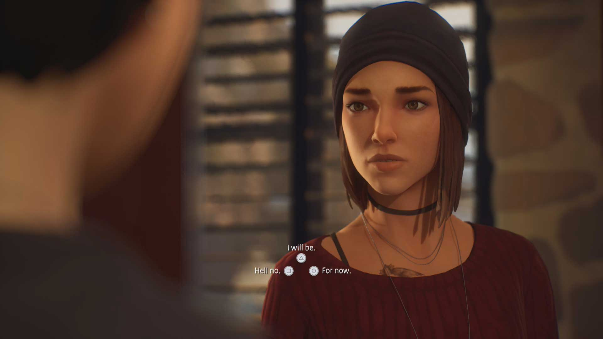
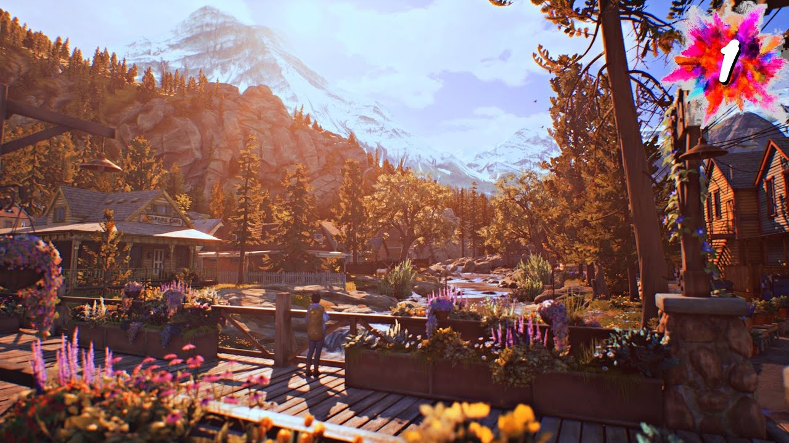

Alex Chen represents the player-character relationship. The player guides her choices, but Alex still has a defined personality and emotional history.

Dialogue choices demonstrate Crawford’s idea of interactivity as exchange: the player chooses, the system responds, and the conversation changes.

Haven Springs supports Picucci’s idea that narrative can be built through environments, objects, spaces, and optional player discovery.
The game’s color and lighting support Bycer’s design perspective by making emotion part of the overall player experience.